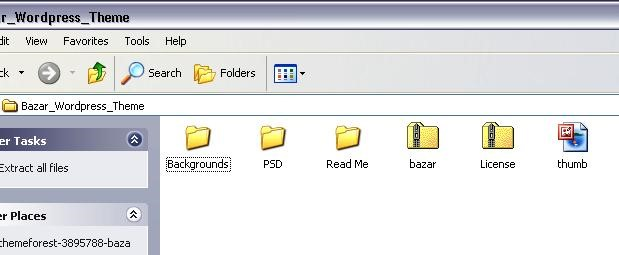

FIRST, Bazar Shop is a Wordpress theme, so make sure you have already installed Wordpress 3.1 or higher. If you haven’t already done this, go to Wordpress.org for a free download and follow their installation instructions.
SECOND, Bazar Shop is also a WooCommerce theme, so you will need to install the WooCommerce Plugin to your Wordpress installation. Click here: WooCommerce Plugin.
Download the Bazar Shop theme from your ThemeForest account downloads page and save it to your desktop. This is how the file will look.
 *Note – This IS NOT the file you will upload to your Wordpress installation. The file you need must be UNZIPPED before uploading.
*Note – This IS NOT the file you will upload to your Wordpress installation. The file you need must be UNZIPPED before uploading.
UNZIP the downloaded theme file. You can use a zip program or you can just CLICK TWICE on the folder icon to show the contents inside. You should see a folder called Bazar_Wordpress_Theme.

CLICK TWICE on Bazar_Wordpress_Theme, and inside you will find five additional folders and one “thumb” file. Find “Bazar”. THIS IS THE FOLDER YOU WILL UPLOAD to your Wordpress Theme.

Drag the Bazar folder to your desktop. It should look like this:

UPLOAD the Bazar file. You can do this one of two ways:
a. Via Wordpress – Log into your Wordpress site.
When you get to your dashboard, scroll down the left sidebar to the Appearance-panel and hover over or click on “Appearance”. You will immediately see a drop-down list like the one in the visual below:
Click on “Themes” and you will see two tabs – Manage Themes and Install Themes. Click “Install Themes”.
Under “Install Themes”, click on “Upload”, and this is what you will see.
Now you are ready to upload the Bazar shop file that you unzipped earlier. Click “Browse” and find the Bazar Shop file on your desktop.
Click the Bazar Shop file, then click “open”. The file name will appear in the browse box.
Click “install now” and wait for the installation message. *Note: The installation will probably take a few minutes, so please be patient.
When the installation is finished, you should see this:
Under the words “Theme installed successfully,” you will see an option to immediately click on “Activate” to activate the theme. You may activate it from this screen, or you can navigate back to “Appearance”, click on “Themes”, and there you will see all your theme choices, including Bazar Shop.
Click on the Bazar Shop icon and then “Save and Activate”. Here is what your new screen will look like:
*Note - in the top yellow bar, you are being instructed to install the WooThemes Updater plugin, but THIS IS NOT NECESSARY, so please ignore this suggestion.
Now you are ready to proceed to Step Two.
But before you move to Step 2, let’s take a detour. Maybe you prefer to upload your new Bazar Shop files via FTP instead of Wordpress. What would you do? Follow these instructions:
b. Uploading Via Filezilla (SKIP THIS STEP if you have already successfully installed your Bazar Shop theme via Wordpress) - Now you will learn how to upload your files using the Filezilla client.
First, BACKUP YOUR FILES! This is always the safest thing to do.
Next, download and install the Filezilla Client - http://filezilla-project.org/
Now OPEN FILEZILLA to see this window:
Fill in your FTP Credentials, like in the image shown below:

Now “CLICK QUICKCONNECT” and Filezilla will load your website. Here is how it will look:

Now use the right side panel to navigate to your themes folder. In the example above, the theme folder is public_html/wp-content/themes/, however, not all web hosting have public_html, it may be something different in your server.
After your themes/ folder is open, use the left side panel to navigate to the place where you have extracted the theme folder. In this example, the extracted theme folder is on the desktop.
Drag the extracted theme folder into your web hosting:
**Note – you may be asked if you want to overwrite files and/or folder. Tick the option to "Always use this action" and click on "Ok.” Then wait until all files are uploaded.
That's all there is to it!
c. Via IE (Internet Explorer) FTP: (SKIP THIS STEP if you have already successfully installed your Bazar Shop theme via Wordpress)
If you prefer uploading your Bazar Shop files via Internet Explorer “ftp” you will use a slightly different method.
First, open a browser and type your ftp address into the address bar like so.
You will see this popup, asking you to insert your user name and password to open your ftp files.

When you insert the correct username and password into the screen, your browser window will open to show your ftp root files. (See below) Scroll right on the navigation bar and find the word “Page”. Click on it to open a drop-down box like the one below. At the bottom of the drop-down click “Open FTP Site”.
ALMOST DONE! After you click “Open FTP Site,” you’ll see this popup for the second time.
Insert your user name and password again and you will get this screen:
Scroll to the folder you will use for your Bazar site. For example, if your site is called “My Shop,” scroll to that folder. Double-click on it to find three main folders inside: WP-Admin, WP-Content, and WP-Includes.
Double-click on WP-Content and find “Themes” inside. Double click on “Themes” to open it then find Bazar Shop on your desktop.
BUT WAIT! Since you’re uploading via FTP you won’t insert the entire Bazar Shop folder into the root files. You must UNZIP IT.
Double-click on Bazar Shop and drag the Bazar folder inside (see below) into the YourShopName>WP-Content>Themes> folder in the FTP files.

Once you drag the files have finished copying, CLOSE THE FTP ROOT FILES FOLDER AND THE PAGE FILES FOLDER OF YOUR FTP FILES, then go to your Wordpress dashboard, navigate to Themes, and see that Bazar Shop is one of your theme choices. Click on the Bazar Shop theme icon, then click “Save and Activate”.
That’s it! You have now completed Step One.